zaiguihuashuxia / README.md




用官方 Python SDK v2 完整走一遍 MCP：一个待办事项 MCP 服务器、几个客户端，外加一个网页调试台。
脑机接口实验室的知识与设备助手：多格式文档 RAG，回答带引用可溯源，Agent 自动生成异常报告。
以 Markdown 为主的个人知识书库，长期整理学习笔记，可以直接在网页上阅读。
就是你正在看的这个主页：GitHub 式的布局，加一点像素画，白天和夜晚跟着主题切换。